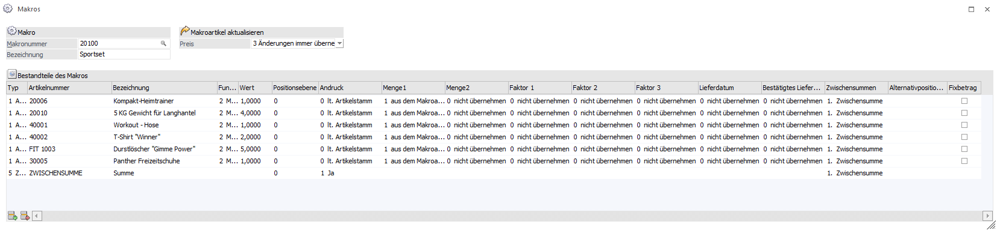
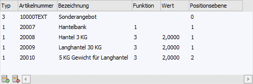
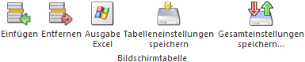

Makros ("Rechnende Textbausteine") können eine Verknüpfung von einzelnen Artikeln, Textbausteinen und Makros zu einem Set bewirken. Diese Sets können über den Menüpunkt
1 WinLine FAKT
1 Stammdaten
1 Artikelstamm
1 Makros
definiert werden. Solch angelegte Makros können an folgenden Stellen hinterlegt / genutzt werden:
ü manueller Aufruf in der Belegerfassung
ü Zuweisung zu einem Artikel (Artikelstamm - Register "Text" - Feld "Makro (Verkauf)" bzw. "Makro (Einkauf)"
ü Zuweisung zu einer Belegart (Belegartenstamm - Register "Ausdruck" - Feld "Endmakro")
ü Zuweisung zu einem Belegkopftext (Belegkopftextstamm - Spalte "Makro")

Folgende Felder und Spalten stehen für die Definition eines Makros zur Verfügung:
Ø Nummer
An dieser Stelle kann eine bis zu 20 Stellen lange, alphanumerische Makronummer eingegeben werden.
Hinweis
Durch Anwählen des Lupen-Symbols bzw. der F9-Taste können nach bereits angelegten Makros gesucht werden (nähere Informationen entnehmen Sie bitte dem Kapitel Makromatchcode).
Achtung
Es werden bei Makros und Textbausteinen dieselben Nummern verwendet. Wenn an dieser Stelle eine Nummer verwendet werden soll, welche bereits bei den Textbausteinen genutzt wird, dann erscheint folgender Hinweis:
Ø Bezeichnung
Hier wird die Bezeichnung (der Name) des Makros hinterlegt. Hierfür stehen 40 Zeichen zur Verfügung.
Hinweis
Bei der Neuanlage eines Makros kann an dieser Stelle durch Anwahl der Taste F9 ein bestehendes Makro kopiert werden. Die im Makrostamm angegebenen Optionen werden beim Expandieren im Belegerfassen berücksichtigt. Die Optionen für den Abgleich wirken nur, wenn das Makro bei einem Artikel im Textregister hinterlegt wurde.
Ø Makroartikel aktualisieren - Preis
Kann eingestellt werden was mit dem Preis beim Artikel / Packageartikel wo das Makro im Artikelstamm hinterlegt wurde passieren soll. Beim Verwenden des Makros bei einem Packageartikel muss die Option "3 - immer verwenden" eingestellt werden.
ü 0 - nicht übernehmen
Beim
Verwenden dieser Einstellung gibt es keinen Bezug zu den Komponenten und dem
Artikel wo das Makro hinterlegt worden ist.
ü 1 - aus dem Makroartikel
übernehmen
Der Preis vom Artikel / Packageartikel wird in die
Makroartikelzeilen übernommen, und dabei wird eine Differenz je nach zuvor
vorhandenem Preis auf die Makroartikelzeilen aufgeteilt.
ü 2 - Makroartikel
aktualisieren
Der Artikel / Packageartikel wird mit der Summe der
Makroartikel bebucht.
ü 3 - immer verwenden
Der
Abgleich erfolgt in beide Richtungen, d.h. eine Änderung beim Artikel /
Packageartikel wirkt auf die Makrozeilen, und eine Änderung bei den
Makroartikeln wirkt auf den Artikel / Packageartikel.
Makrotabelle

In der Makrotabelle werden die Artikel, Textbausteine und / oder Makros hinterlegt.
Ø Typ
Über die Spalte "Typ" wird gesteuert, ob ein Artikel, ein Textbaustein oder ein anderes "rechnendes Makro" abgerufen wird.
ü 1 - Artikel
Der Typ "1 -
Artikel" bedeutet, dass im Makro eine Artikelzeile eingefügt wird. Diese Zeilen
können in weiterer Folge mit einer Rechenfunktion (Spalte "Funktion") versehen
werden.
ü 2 - Makro
Der Typ "2 - Makro"
bedeutet, dass im Makro ein weiteres Makro hinterlegt wird.
Hinweis
Ein Makro kann nicht auf sich selbst verweisen!
ü 3 - Textbaustein
Der Typ "3 -
Textbaustein" bedeutet, dass im Makro ein Textbaustein eingefügt wird.
ü 4 - Summe
Bei diesem Summentyp
wird der bzw. werden die vorangegangenen Werte summiert und der Summenspeicher
der Summenwerte geleert.
ü 5 - Zwischensumme
Bei diesem
Summentyp wird der bzw. werden die vorangegangenen Werte summiert und der
Summenspeicher bleibt erhalten.
ü 7 - Leerzeile
Mit diesem Typ
kann eine optische Leerzeile im Beleg eingefügt werden.
Ø Artikelnummer
In Abhängigkeit mit dem Typ kann an dieser Stelle die Artikelnummer, die Makronummer oder der Textbaustein hinterlegt werden.
Ø Bezeichnung
An dieser Stelle wird die Bezeichnung des Artikels, des Makros oder des Textbausteins angezeigt.
Ø Funktion
In dieser Spalte kann für Artikel eine Rechenfunktion definiert werden:
ü 1 - Mengeneingabe
Bei der
Ausführung des Makros muss die Menge manuell durch Tastatureingabe eingegeben
werden.
ü 2 - Mengenkonstante
Die als
Konstante eingetragene Zahl (Spalte "Wert"), wird als Mengeneingabe am
Bildschirm angezeigt. Es ist keinerlei manuelle Mengeneingabe per Tastatur
erforderlich.
Beispiel
Artikelnummer 10001; Funktion 2
- Mengenkonstante; Wert 5
D.h. wird ein Beleg mit diesem Makro erfasst,
haben die Artikel automatisch in der Menge "5" stehen. Die Mengeneingabe kann
natürlich noch editiert werden.
ü 3 - Mengenmultiplikation
Die
letzte definierte Konstante (Funktion 2) oder zuletzt erfolgte Eingabe (Funktion
1) wird mit der eingetragenen Zahl multipliziert.
Beispiel
Artikelnummer 10001; Funktion 2
- Mengenkonstante; Wert 2
Artikelnummer 10002; Funktion 3 -
Mengenmultiplikation; Wert 3
Artikelnummer 10003, Funktion 3 -
Mengenmultiplikation; Wert 9
D.h. im Beleg wird der Artikel 10001 mit 2
Stück, der Artikel 10002 mit 6 Stück und der Artikel 10004 mit 18 Stück erfasst.
Die Mengeneingabe kann natürlich noch editiert werden.
ü 4 - Mengen-Addition
Es wird zur
zuletzt definierten Konstante die eingegebene Zahl addiert.
Beispiel
Artikelnummer 10001; Funktion 2
- Mengenkonstante; Wert 1
Artikelnummer 10002; Funktion 4 - Mengenaddition;
Wert 3
D.h. vom Artikel 10001 wird 1 Stück und vom Artikel 10002 werden 4
Stück erfasst. Die Mengeneingabe kann natürlich noch editiert werden
Ø Wert
Hier wird der Wert (die Zahl) für die Funktion hinterlegt.
Hinweis
Es ist darauf zu achten, dass bei Verwendung von Nachkommastellen die Einstellung für Artikel lt. Artikelgruppe verwendet wird.
Ø Positionsebene
An dieser Stelle kann definiert werden, welcher Positionsebene die Artikel, Makros bzw. Textbausteine in der Belegerfassung zu gewiesen werden sollen.
Ø Andruck
Kann eingestellt werden, ob der Artikel auf dem Beleg ausgewiesen werden soll oder nicht…
ü Lt. Artikelstamm
ü Ja
ü Nein
Ø Menge1
Bei der Menge kann eine Berücksichtigung einer Mengenänderung des Makoartikels eingestellt werden oder aufgrund einer Makrokomponente wird die Menge beim Makroartikel aktualisiert.
ü 0 - nicht übernehmen
Beim
Verwenden dieser Einstellung gibt es keinen Bezug zu den Komponenten und dem
Artikel wo das Makro hinterlegt worden ist.
ü 1 - aus dem Makroartikel
übernehmen
Die Menge vom Artikel / Packageartikel wird in die
Makroartikelzeilen übernommen
ü 2 - Makroartikel
aktualisieren
Der Artikel / Packageartikel wird mit der Menge der
Makroartikel aktualisiert.
ü 3 - immer verwenden
Der
Abgleich erfolgt in beide Richtungen, d.h. eine Änderung beim Artikel /
Packageartikel wirkt auf die Makrozeilen, und eine Änderung bei den
Makroartikeln wirkt auf den Artikel / Packageartikel.
Ø Menge2
Das Verhalten der Menge2 kann wie bei der Menge1 parametrisiert werden
ü 0 - nicht übernehmen
Beim
Verwenden dieser Einstellung gibt es keinen Bezug zu den Komponenten und dem
Artikel wo das Makro hinterlegt worden ist.
ü 1 - aus dem Makroartikel
übernehmen
Die Menge vom Artikel / Packageartikel wird in die
Makroartikelzeilen übernommen.
ü 2 - Makroartikel
aktualisieren
Der Artikel / Packageartikel wird mit der Menge der
Makroartikel aktualisiert.
ü 3 - immer verwenden
Der
Abgleich erfolgt in beide Richtungen, d.h. eine Änderung beim Artikel /
Packageartikel wirkt auf die Makrozeilen, und eine Änderung bei den
Makroartikeln wirkt auf den Artikel / Packageartikel.
Ø Faktor 1 bis 3
Änderungen in den Faktor1 bis 3 können beim Verwenden eines Makros berücksichtigt werden
ü 0 - nicht übernehmen
Beim
Verwenden dieser Einstellung gibt es keinen Bezug zu den Komponenten und dem
Artikel wo das Makro hinterlegt worden ist.
ü 1 - aus dem Makroartikel
übernehmen
Der hinterlegte Wert aus den Faktorfeldern vom Artikel /
Packageartikel wird in die Makroartikelzeilen übernommen.
ü 2 - Makroartikel
aktualisieren
Der Artikel / Packageartikel wird mit der Menge der
Makroartikel aktualisiert.
ü 3 - immer verwenden
Der
Abgleich erfolgt in beide Richtungen, d.h. eine Änderung beim Artikel /
Packageartikel wirkt auf die Makrozeilen, und eine Änderung bei den
Makroartikeln wirkt auf den Artikel / Packageartikel.
Ø Lieferdatum (Bezeichnung wird aus den Belegoptionen / Bezeichnungen übernommen)
ü 0 - nicht übernehmen
Beim
Verwenden dieser Einstellung gibt es keinen Bezug zu den Komponenten und dem
Artikel wo das Makro hinterlegt worden ist.
ü 1 - aus dem Makroartikel
übernehmen
Das eingetragene Lieferdatum vom Artikel / Packageartikel wird in
die Makroartikelzeilen übernommen. Bei Packageartikeln kann das Datum in den
Komponentenzeilen nicht mehr bearbeitet werden.
ü 2 - Makroartikel
aktualisieren
Der Artikel / Packageartikel wird mit dem Lieferdatum des
Makroartikels aktualisiert.
ü 3 - immer verwenden
Der
Abgleich erfolgt in beide Richtungen, d.h. eine Änderung beim Artikel /
Packageartikel wirkt auf die Makrozeilen, und eine Änderung bei den
Makroartikeln wirkt auf den Artikel / Packageartikel.
Ø Bestätigtes Lieferdatum (Bezeichnung wird aus den Belegoptionen / Bezeichnungen übernommen)
ü 0 - nicht übernehmen
Beim
Verwenden dieser Einstellung gibt es keinen Bezug zu den Komponenten und dem
Artikel wo das Makro hinterlegt worden ist.
ü 1 - aus dem Makroartikel
übernehmen
Das eingetragene Lieferdatum vom Artikel / Packageartikel wird in
die Makroartikelzeilen übernommen. Bei Packageartikeln kann das Datum in den
Komponentenzeilen nicht mehr bearbeitet werden.
ü 2 - Makroartikel
aktualisieren
Der Artikel / Packageartikel wird mit dem Lieferdatum des
Makroartikels aktualisiert.
ü 3 - immer verwenden
Der
Abgleich erfolgt in beide Richtungen, d.h. eine Änderung beim Artikel /
Packageartikel wirkt auf die Makrozeilen, und eine Änderung bei den
Makroartikeln wirkt auf den Artikel / Packageartikel.
Ø Zwischensummen
Bei den Zwischensummen kann eingestellt werden, welche der 10 Zwischensummen herangezogen werden soll. Des Weiteren gibt es die Einstellung für die Zwischensumme lt. Artikelstamm oder die Zwischensumme kann über die Option 0 = keine ausgeschaltet werden.
Ø Alternativpositionen
Der Wert für die Alternativpositionen kann nur beim Verwenden des Typs Artikel vorgenommen werden. Dabei stehen die Alternativpositionen1 bis; 0- Standard und keine (immer mitrechnen) zur Auswahl. Die Alternativpositionen1 bis 9 werden nur bei der Belegstufe Angebot / Anfrage in einem Beleg extrahiert.
Ø Fixbetrag
Diese Checkbox ist nur verfügbar, wenn die Preisoption auf 1 (Preis aus dem Makroartikel übernehmen) oder 3 (Änderungen immer übernehmen) gestellt ist.
Wenn diese Option aktiviert wird, wird der Betrag dieser Zeile vom Makroabgleich nicht geändert. Wenn der Preis dieser Zeile editiert wird, wird der Makroartikel um die Differenz geändert. Wenn der Preis des Makroartikels geändert wird, bleibt der Preis in dieser Zeile erhalten.
Tabellenbuttons

Ø Einfügen
An die aktuelle Stelle wird eine neue Zeile eingefügt.
Ø Entfernen
Die aktuell markierte Zeile wird gelöscht.
Ø Ausgabe Excel
Durch Anwahl des Buttons "Ausgabe Excel" wird der Inhalt der Tabelle nach Microsoft Excel übergeben.
Ø Tabelleneinstellungen speichern
Die Spalten einer Tabelle können grundsätzlich an beliebige Positionen verschoben, bzw. in der Breite entsprechend angepasst werden. Durch Anwahl des Buttons "Tabelleneinstellungen speichern" werden die Einstellungen benutzerspezifisch gespeichert und bei dem nächsten Aufruf des Programmpunktes wieder vorgeschlagen.
Ø Gesamteinstellungen speichern
Im Gegensatz zu "Tabelleneinstellungen speichern" können mit "Gesamteinstellungen speichern" mehrere Tabellenaufbauten gespeichert und nach Wunsch geladen werden. Zusätzlich werden Sonderfunktionen der Tabelle (z.B. "Spalte gruppieren") ebenfalls bei der Speicherung bedacht.
Buttons
Ø OK
Mit dem Ok-Button bzw. der Taste F5 werden die Hinterlegungen gespeichert und das Fenster geschlossen.
Ø Ende
Mit dem Ende-Button bzw. der Taste ESC wird das Fenster geschlossen; nicht gespeicherte Eingaben werden dabei verworfen.
Ø Löschen
Durch die Anwahl des Buttons "Löschen" wird das Makro gelöscht.
Ø Makroinfo
Über den Button "Makroinfo" kann ein neues Fenster geöffnet werden, in dem alle Artikel aufgelistet sind, in denen das selektierte Makro hinterlegt wurde (Einkauf und Verkauf). Nähere Informationen hierzu sind dem Kapitel Makro-Info / Stücklisten-Info zu entnehmen.
Ø VCR-Buttons
Über die so genannten VCR-Buttons kann in den vorhandenen Datensätzen geblättert werden.
ü  Damit kann der
erste Datensatz angesprochen werden.
Damit kann der
erste Datensatz angesprochen werden.
ü  Damit kann der
vorherige Datensatz angesprochen werden.
Damit kann der
vorherige Datensatz angesprochen werden.
ü  Damit kann der
nächste Datensatz angesprochen werden.
Damit kann der
nächste Datensatz angesprochen werden.
ü  Damit kann der
letzte Datensatz angesprochen werden.
Damit kann der
letzte Datensatz angesprochen werden.
ü  Damit wird die
nächste freie Nummer für die Neuanlage gesucht.
Damit wird die
nächste freie Nummer für die Neuanlage gesucht.